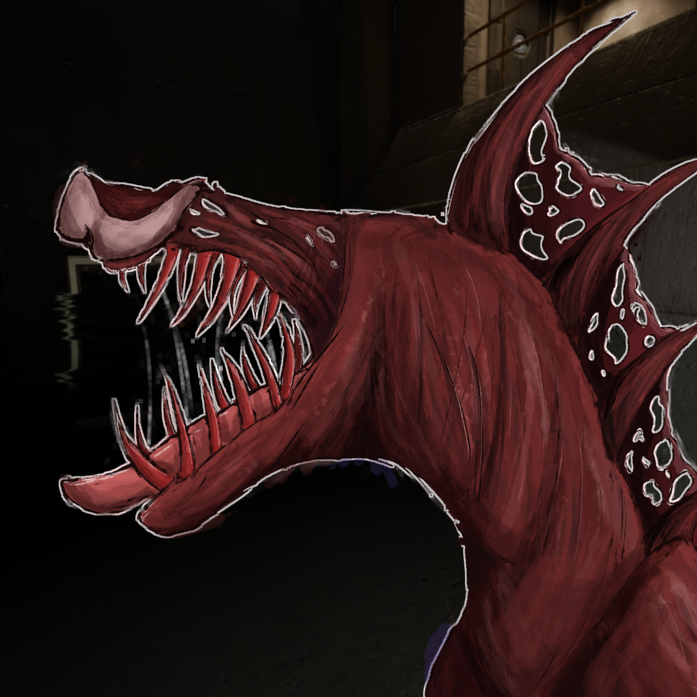
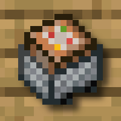
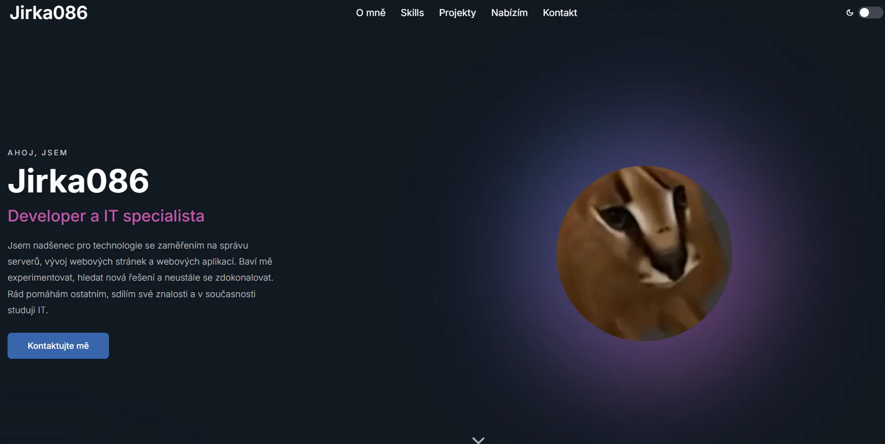

Kontakt
můžete mě kontaktovat pomocí těchto odkazů.
AHOJ, JSEM
Jsem nadšenec pro technologie se zaměřením na správu serverů, vývoj webových stránek a webových aplikací. Baví mě experimentovat, hledat nová řešení a neustále se zdokonalovat. Rád pomáhám ostatním, sdílím své znalosti a v současnosti studuji IT.
Napište miFrontend
Backend
Nástroje a platformy
Technik herních serverů
Základy / Učím se
Správce serveru, Vývoj webu: HTML5, CSS, JavaScript
SCP:SL komunita, hostuje servery pro hru SCP:SL s kvalitním roleplay zážitkem. Jsme komunita, kde si zakládáme na civilizovaném chování a především na již zmíněné kvalitě. Nabízíme vlastní mapy, pluginy a profesionální tým včetně vedení serveru. Naším cílem je posunout hranici zpátky tam, kde byla již před několika lety na jiných serverech, kde roleplay ještě představovalo ten pravý zážitek a každý se měl možnost něco nového naučit.
Navštívit web
java
Jednoduché pluginy pro Minecraft, které jsem vytvořil pro učení Javy. Většina z nich možná není aktivně udržována a nejsou dokonalé. V některých pluginech mohlo být použito malé množství umělé inteligence.
Navštívit modrinth
Vývoj webu: HTML5, CSS, PHP, JavaScript
Moje osobní portfolio, kde prezentuji své dovednosti, projekty a zkušenosti v oblasti vývoje webových stránek a IT. Portfolio slouží jako ukázka mé práce a umožňuje ostatním se lépe seznámit s mými schopnostmi.
Navštívit web